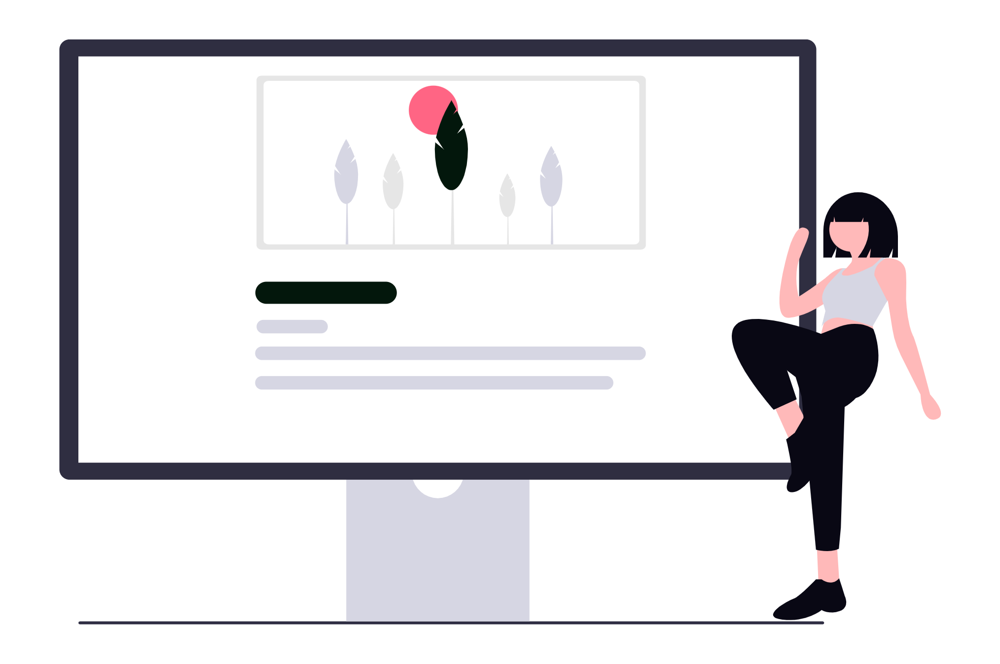
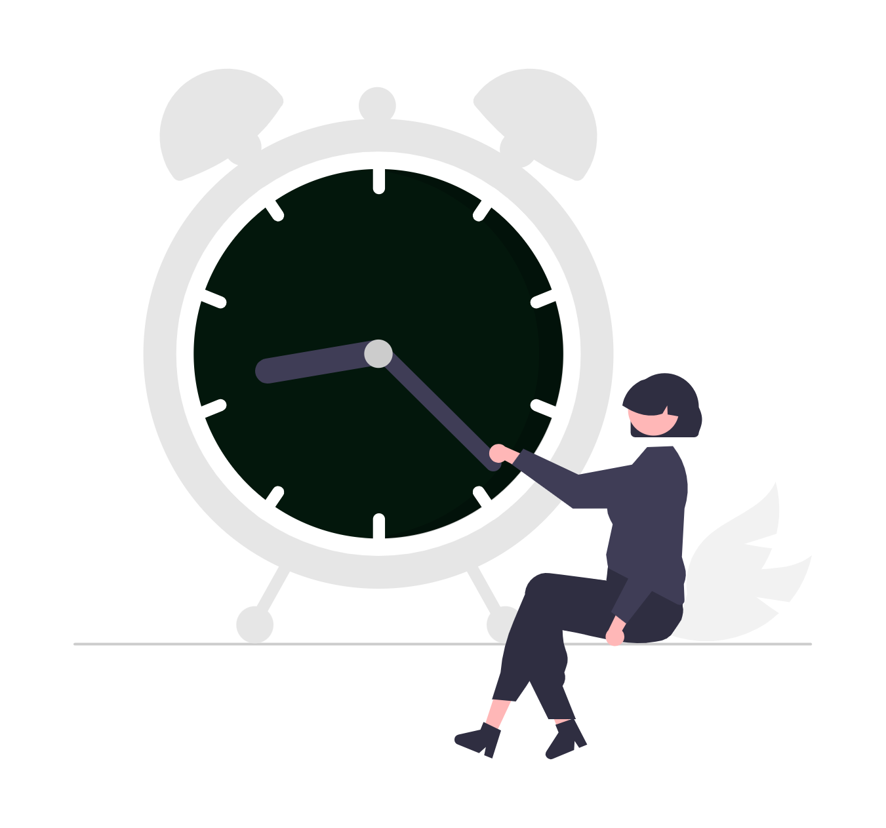

Câștigă până la 3 ore pe zi fără să lucrezi mai mult. Află cum un singur tool de management juridic te poate ajuta să-ți organizezi mai bine munca, să reduci sarcinile repetitive și să recâștigi controlul asupra timpului tău ca avocat.
Pentru un avocat, timpul nu e doar o resursă - e diferența dintre control și haos. Între ședințe, termene limită, redactări și telefoane de la clienți, ziua pare mereu prea scurtă.
Mulți avocați încă își gestionează activitatea cu agende, tabele Excel sau e-mailuri organizate "cum dă Domnul".
Alții au început să lucreze mai structurat, cu ajutorul unor instrumente digitale create special pentru domeniul juridic.
Realitatea e simplă: există softuri care pot salva până la 3 ore pe zi din volumul tău de muncă. Nu e o exagerare. E rezultatul unei organizări mai bune.


Unde pierzi, de fapt, timpul?
Chiar și cei mai organizați avocați ajung să piardă zilnic timp prețios în activități aparent mărunte, dar care se adună. Căutarea unui fișier sau a unui e-mail vechi poate dura minute bune, mai ales când documentele nu sunt centralizate.
Uneori introduci aceeași informație în mai multe locuri - o dată în e-mail, apoi într-un tabel, apoi într-un document.
Verificările frecvente pe Portalul Instanțelor pentru a urmări termene sau soluții consumă timp și energie, la fel și redactarea manuală a facturilor sau urmărirea plăților.
Pe lângă toate acestea, task-urile zilnice sunt ținute, adesea, în minte, pe post-it-uri sau în agende disparate, ceea ce duce ușor la scăpări. Iar comunicarea cu clienții implică uneori aceleași explicații, reluate din nou și din nou.
Toate aceste lucruri nu țin de competență sau de efort, ci de lipsa unui sistem clar care să simplifice și să automatizeze partea administrativă a muncii.
Cum te ajută un tool de management juridic
Un software specializat pentru avocați - cunoscut și sub denumirea de "legal practice management" - poate face o diferență majoră. În loc să jonglezi între foldere, e-mailuri și Excel-uri, ai toate informațiile relevante într-un singur loc.
Dosarele, clienții, termenele și documentele sunt organizate clar și accesibile imediat.
Aceste instrumente automatizează mai multe sarcini repetitive: facturile se generează automat pe baza timpului înregistrat, plățile sunt urmărite în timp real, iar actualizările din instanță pot fi primite fără să mai cauți manual.
Apoi, vezi mai ușor ce ai de făcut în fiecare zi, ce e urgent și ce poate fi delegat. Poți înțelege mai bine cum îți folosești timpul, ce clienți sunt profitabili și unde se blochează lucrurile.
Iar pentru că toate aceste funcții sunt disponibile și de pe mobil sau tabletă, ai libertatea să lucrezi de oriunde, nu doar de la birou.
Câștigul nu e doar teoretic. Vorbim despre ore întregi salvate în fiecare săptămână. Timp real, pe care îl poți folosi pentru clienți, dezvoltare profesională sau pur și simplu pentru tine.
Un exemplu relevant de astfel de soluție este KeyVision PRO, un tool românesc dezvoltat special pentru avocați. Acesta integrează toate funcțiile esențiale pentru o activitate juridică eficientă: de la gestionarea dosarelor și a clienților, până la monitorizarea timpului lucrat și facturarea automată - inclusiv integrare cu sistemul e-Factura.
Un avantaj important este conexiunea cu Portalul Instanțelor, care permite actualizarea automată a informațiilor din dosare, fără ca tu să pierzi timp căutând zilnic date noi. Apoi, oferă rapoarte clare despre activitate, performanță și încasări, utile mai ales când vrei să înțelegi cum funcționează firma sau biroul tău.
Nu este singura opțiune de pe piață, dar e una dintre puținele care reflectă cu adevărat nevoile avocaților din România. Mulți profesioniști o folosesc deja, în special pentru a reduce sarcinile administrative și pentru a-și recupera timpul.
Dacă simți că timpul nu îți mai ajunge, soluția nu este să lucrezi mai mult, ci mai bine. O oră economisită azi înseamnă o zi întreagă economisită până la finalul lunii.
Iar când ai un instrument care face ordine în haosul zilnic, începi să recâștigi controlul asupra propriei activități.
Nu e magie. E management.